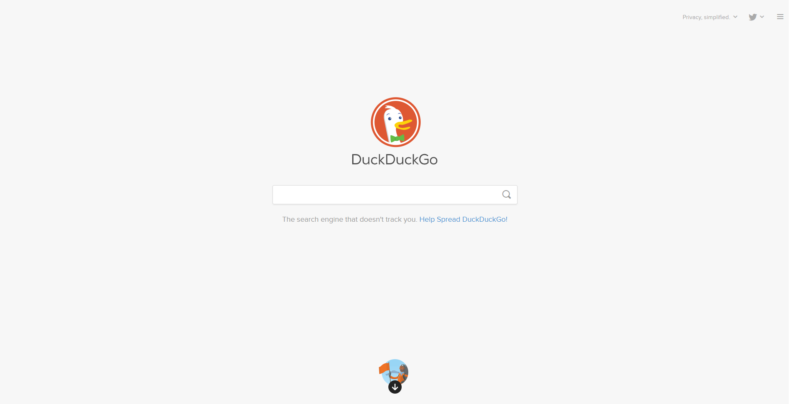
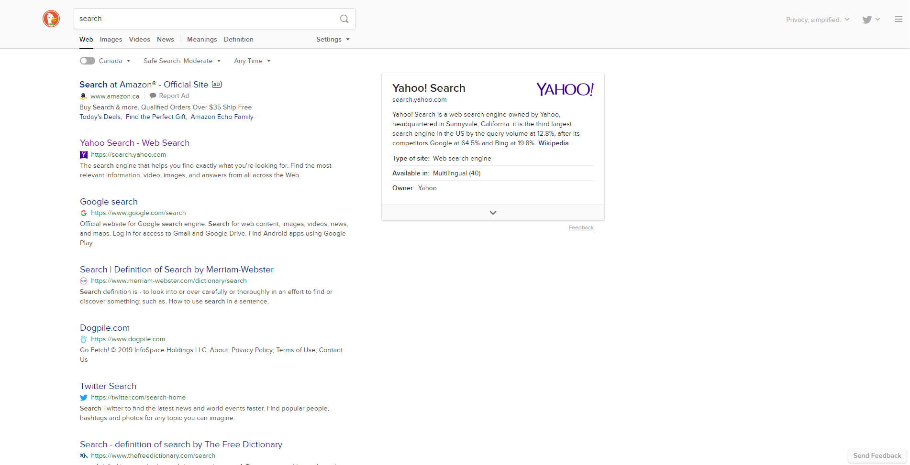

DuckDuckGo was founded by Gabriel Weinberg in 2008 and is based in Paoli, Pennsylvania. Weinburg initially self-funded the website but now it is now advertisment supported. The origin of the name comes from a game called duck, duck, goose. The website process around 5 billion search queries every year with around 39 million a day. Its search index is a compilation with over 400 sources including Instant Answers, its own webcrawler, crowd-sourced sites (such as Wikipedia). Partnership with Yahoo and Bing contributes further more to the result pool.
| DuckDuckGo's homepage. | DuckDuckGo's search results page. |
DuckDuckgo primarily distinguishes itself from the big search engines from its claimed total privacy approach. This means it does not collect IP addresses, log user information and only uses cookies when it is required. It emphasizes quality over having a big quantity of search result items of so it avoids use of search filters and personalized search. Its search page is very stripped down, simple. Advertisement is limited to its sponsors and it even filters out webpages that has a big amount of ads within them.
Web Search Engine Comparison |
|||||||||||
|---|---|---|---|---|---|---|---|---|---|---|---|
| Search Engine | Server Locations | Speed | Pages Indexed (2019) | Image Search | Video Search | News | Maps | Has Own Social Media | Privacy | Censorship (countries) | Advertisements |
| USA, Europe, Asia | Fast | 61 billion | Available | Available | Available | Available | Yes | User is tracked | Argentina, China | Yes | |
| Bing | USA, China | Fast | 1.1 billion | Available | Available | Available | Not Available | No | User is tracked | China | Yes |
| Yahoo! Search | USA | Fast | Unknown | Available | Available | Available | Not Available | Yes | User is tracked | Argentina | Yes |
| DuckDuckGo | No Dedicated Server | Fast | 1 billion | Available | Available | Available | Not Available | No | User is not tracked | No | Yes |
| Yandex.ru | Russia | Fast | Unknown | Available | Available | Available | Available | Yes (testing phase) | User is tracked | Unknown | Yes |
| Baidu | China | Fast | Unknown | Available | Available | Available | Available | Yes | User is tracked | China | Yes |
COPYRIGHT ©2019 CHRIS YEUNG